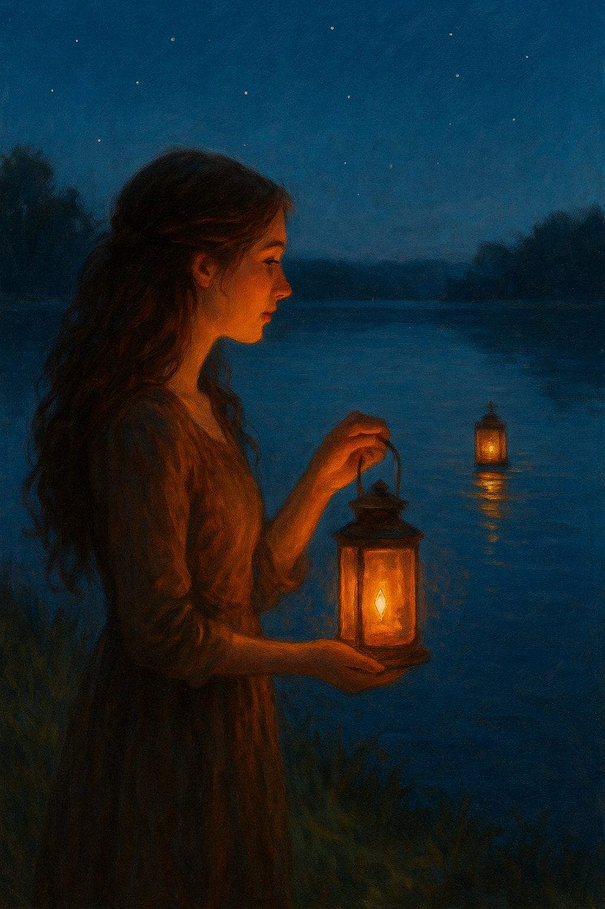
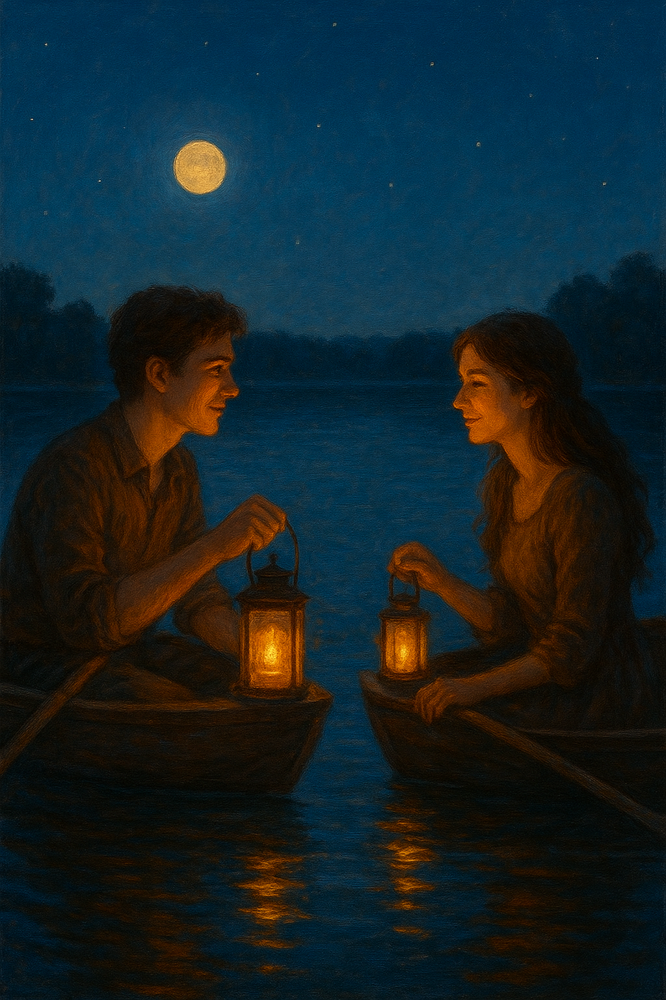

On the edge of a quiet lake, where mist flows naturally and trees sway swiftly, Lorah lit a lanten every night.
She said it was for luck or maybe a light to guide someones path.
One evening, as the orange glow rippled across the water, Lorah noticed another faint glow from the distance.
Curious, she returned the next night, and there it was again, the same faint glow that was waiting for hers.
For weeks, this went on for a while until Lorah decided to send a letter towards the faint glow. Sending it in a boat and pushed it towards it.
The letter wrote, "Who are you?"
A letter returned to Lorah, "The one who's been waiting for you."
The next evening, they met where the lanterns touched on the lake. They are both in their boats, gazing at eachother.
The flickering lights glow even brighter, until a voice emitted, "I'm Jaxon, what may yours be?"
"I'm Lorah" replied Lorah. Afterwards they decided to meet where the lake turns quiet and the mist flows naturally.
Where the trees sway swifty and where the lantern glow intertwines in a dance.
Lorah realized the luck she has been seeking was not in the lantern at all, but in the hand that reached for hers.

Home Page Contact Page